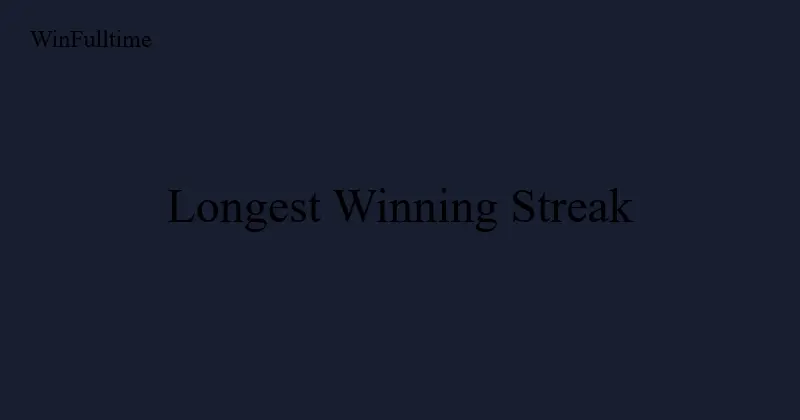

The Longest Winning Streak in Football History

Winning one football match is hard. Winning ten in a row requires a combination of quality, fitness, depth, and luck that most teams never achieve. Winning twenty or more is the stuff of legend — a run so dominant that it enters football folklore and becomes a reference point for generations.
The longest winning streaks in football history span different eras, leagues, and levels of competition. Some happened in Europe's top divisions against elite opposition. Others occurred in smaller leagues where one club's financial dominance created an unbridgeable gap. But every streak on this list shares one thing: a period where a team was, for a sustained stretch, genuinely unbeatable.
This article examines the longest winning streaks in professional football history, the context that made them possible, and what they reveal about the nature of dominance in the sport.
The World Record: Al-Hilal — 34 Consecutive Wins (2023-2024)
The official world record for consecutive wins in top-flight professional football across all competitions belongs to Saudi Arabia's Al-Hilal. Between September 25, 2023 and April 11, 2024, Al-Hilal won 34 consecutive matches — a run spanning the Saudi Pro League, the King's Cup, the Saudi Super Cup, and the AFC Champions League. The streak was certified by the Guinness World Records as the most consecutive men's association football victories across all competitions.
Al-Hilal matched The New Saints' previous record of 27 with a league win in early March 2024, then moved clear with a 2-0 victory over Al-Ittihad in the AFC Champions League on March 12, 2024 — win number 28. The streak stretched to 34 before it finally ended on April 17, 2024 with a 4-2 defeat away to Al Ain in the first leg of the AFC Champions League semi-final.
One qualifier is worth noting: Turkmenistan's FK Arkadag recorded 61 consecutive victories between August 2023 and November 2024, a run that surpassed Al-Hilal's in raw numbers. However, that streak has not been recognised by Guinness World Records because of concerns about the governance of the league in which most of the wins were recorded, so Al-Hilal's 34 remains the official record for top-flight professional football.
The New Saints — 27 Consecutive Wins (2016-2017)
Between December 2016 and September 2017, The New Saints of the Welsh Premier League won 27 consecutive league matches — then the world record. The streak, certified by the Guinness World Records, covered the final 11 matches of the 2016-17 season and the first 16 matches of the 2017-18 season, and ended with a 1-1 draw against Newtown on September 23, 2017.
TNS held the record for seven years, until Al-Hilal surpassed it in March 2024. The achievement was notable because the Welsh Premier League is a fully professional top-flight league affiliated with UEFA, and the streak included victories against every other club in the division. TNS operate with a significantly larger budget than most of their domestic rivals, but winning 27 consecutive matches still requires consistency, professionalism, and mental fortitude regardless of the competition level.
Ajax — 26 Consecutive Wins (1971-1972)
Before The New Saints set the mark in 2017, Ajax of Amsterdam had held the world record for 45 years. Between November 1971 and October 1972, the great Ajax side managed by Stefan Kovacs and featuring Johan Cruyff, Johan Neeskens, and Piet Keizer won 26 consecutive Eredivisie matches.
This streak is widely considered the most impressive in football history because of the context. Ajax were not playing in a domestic league with financial imbalances — Feyenoord and PSV Eindhoven were genuine rivals with comparable resources. The streak was achieved while Ajax were also competing in and winning the European Cup, meaning they played two matches per week throughout much of the run.
Ajax's 26-match streak included 5 wins against Feyenoord (including a 5-1 demolition) and 4 wins against PSV. The average scoreline across the 26 matches was 3.4 goals scored and 0.6 conceded. The run finally ended with a 1-1 draw against FC Amsterdam in October 1972.
The Context of Total Football
The Ajax streak coincided with the peak of "Total Football," the revolutionary tactical system where players swapped positions fluidly and the team attacked and defended as a unit. The system was so advanced for its time that opponents could not predict Ajax's attacking patterns. The 26-match winning streak was made possible by a tactical innovation that left the rest of Europe struggling to adapt.
Coritiba — 24 Consecutive Wins (2011)
In 2011, Brazilian side Coritiba won 24 consecutive matches in the Parana State Championship and Brazilian Serie B combined. The streak began in January 2011 and lasted until June 2011, spanning state and national competitions.
What makes Coritiba's streak remarkable is that it was achieved in Brazilian football, where the travel distances are vast, the climate varies enormously, and the competitive depth is significantly greater than in many smaller European leagues. Coritiba won the Parana State Championship with a 100% record and were promoted to Serie A after dominating the second division.
Benfica — 24 Consecutive Wins (1972-1973)
Benfica won 24 consecutive Primeira Liga matches between November 1972 and September 1973, a record that still stands in Portuguese football. The team, managed by Jimmy Hagan and featuring the legendary Eusebio, scored 87 goals in those 24 matches and conceded just 11.
The streak included victories over Porto (5-0) and Sporting Lisbon (3-1) and was only ended by a 1-1 draw against Vitoria Setubal. Benfica won the league title that season by 10 points, the largest margin in Portuguese football at the time.
Celtic — 23 Consecutive Wins (1908-1909)
One of the oldest records in football belongs to Celtic, who won 23 consecutive matches across all competitions between November 1908 and April 1909. The streak included Scottish League matches, Scottish Cup ties, and Glasgow Cup matches.
Celtic's streak is notable because it was achieved in an era before substitutes, modern sports science, and tactical analysis. The same 11 players played virtually every match, often with only 48 hours between fixtures. The club's historian described the period as "football's lost dynasty" because the record has never been broken in Scottish football.
| Rank | Club | Streak | Season(s) | Competition | Ended By |
|---|---|---|---|---|---|
| 1 | Al-Hilal | 34 | 2023-2024 | All competitions | Al Ain (4-2 loss) |
| 2 | The New Saints | 27 | 2016-2017 | Welsh Premier League | Newtown (1-1) |
| 3 | Ajax | 26 | 1971-1972 | Eredivisie | FC Amsterdam (1-1) |
| 4 | Coritiba | 24 | 2011 | Parana State / Serie B | Sport Recife (2-0 loss) |
| 5 | Benfica | 24 | 1972-1973 | Primeira Liga | Vitoria Setubal (1-1) |
| 6 | Celtic | 23 | 1908-1909 | Scottish League / Cups | Heart of Midlothian (1-0 loss) |
| 7 | Real Madrid | 22 | 2014-2015 | La Liga | Valencia (2-1 loss) |
| 8 | Manchester City | 21 | 2020-2021 | Premier League | Manchester United (2-0 loss) |
| 9 | Bayern Munich | 19 | 2013-2014 | Bundesliga | Augsburg (1-0 loss) |
Real Madrid — 22 Consecutive Wins (2014-2015)
Real Madrid's 22-match winning streak across all competitions in the 2014-15 season is one of the most famous modern streaks. Under Carlo Ancelotti, Real Madrid won 22 consecutive matches between September and December 2014, including 16 La Liga matches, 4 Champions League matches, and 2 Copa del Rey matches.
The streak included victories over Barcelona (3-1 at the Bernabeu), Liverpool (3-0 in the Champions League), and Atletico Madrid (4-0 in the Copa del Rey). The run was finally ended by a 4-2 defeat to Atletico Madrid in the Copa del Rey second leg. Real Madrid's 22-match streak is the longest by any team in European top-flight football in the 21st century.
Manchester City — 21 Consecutive Wins (2020-2021)
Manchester City's 21-match winning streak across all competitions between December 2020 and March 2021 is the longest by an English top-flight club in history. The streak included 13 Premier League matches, 4 FA Cup matches, 3 Champions League matches, and 1 League Cup match.
City's streak was remarkable for its defensive solidity: they kept 14 clean sheets in 21 matches and conceded just 5 goals total. The run transformed a season that started slowly into a dominant title win, with City finishing 12 points clear at the top of the Premier League.
What Makes a Winning Streak Possible?
Analysing the longest winning streaks in football history reveals several common factors.
Squad Depth and Rotation
Every team on this list had exceptional squad depth that allowed them to rotate without dropping performance levels. Ajax's 1972 squad rotated heavily because they were competing in three competitions. Manchester City's 2021 streak was managed with regular rotation, with Pep Guardiola making an average of 4.1 changes per match during the run.
Defensive Solidity
Winning streaks are built on defence. Every team in the top 10 longest streaks kept clean sheets in at least 60% of the matches during their run. Manchester City kept 14 clean sheets in their 21-match streak (67%). Ajax kept 18 in their 26-match streak (69%). Teams that rely on outscoring opponents in high-scoring matches tend to drop points more frequently.
Injury Luck
Sustained winning runs require key players to stay fit. Every streak on this list was characterised by minimal injuries to first-team players. The moment a key defender or midfielder misses matches, the defensive organisation that underpins winning streaks tends to break.
Mental Momentum
Sports psychology research has identified a "momentum effect" in winning streaks where the psychological belief in continued success becomes a self-fulfilling prophecy. Teams on winning streaks show higher passing accuracy, quicker decision-making, and greater willingness to take risks in attacking positions. The confidence that comes from consecutive wins creates a positive feedback loop.
How Winning Streaks Affect Betting Markets
Teams on long winning streaks are consistently overbet by the public and underweighted by sharp bettors. The phenomenon is known as the "hot hand fallacy" in betting markets — the public assumes the streak will continue indefinitely, while professionals know that regression to the mean is inevitable.
The value, however, is not in betting against the streaking team. The value is in understanding how the streak will end. Data from the past 20 years of European football shows that long winning streaks typically end one of three ways:
- In a draw (42%): The team drops points without losing, often against a defensive opponent who sits deep and makes the game difficult.
- In a specific tactical matchup (35%): The streak ends against a team that uses a formation or pressing style that disrupts the streaking team's patterns.
- After a European fixture (23%): Fatigue from midweek European competition breaks the domestic streak in the following weekend match.
Bettors looking to profit from streak data should focus on the Under 2.5 Goals market in matches featuring a team on a long winning streak. The streak creates pressure that often leads to tight, low-scoring matches regardless of the opponent.
Pro Insight: The Streak-Breaking Angle
During Bayern Munich's 19-match winning streak in 2013-14, their average match total goals was 4.2. But in the three matches before the streak ended, the average dropped to 2.0. The impending end of a winning streak is often signalled by narrower victories and increased defensive tension. Sharp bettors monitor for this pattern and bet Under in the matches immediately following unusually tight wins.
Frequently Asked Questions
What is the longest winning streak in football history?
The official world record for consecutive wins in top-flight professional football across all competitions is 34, set by Saudi Arabia's Al-Hilal between September 2023 and April 2024. The streak, certified by Guinness World Records, surpassed the previous record of 27 set by The New Saints in 2016-2017.
What is the longest winning streak in Europe's top five leagues?
Ajax's 26-match winning streak in the Eredivisie (1971-1972) is the longest in any European top-flight league. In the Premier League, Manchester City hold the record with 15 consecutive wins in 2019. In La Liga, Barcelona hold the record with 16 consecutive wins in 2011.
How often do long winning streaks end in draws?
Approximately 42% of winning streaks of 10+ matches end in a draw rather than a loss. This is because the streaking team often plays conservatively to preserve the unbeaten run, while the opponent raises their game specifically to stop the streak.
Which club has the longest unbeaten streak overall?
The longest unbeaten streak in professional football history belongs to Italian club AC Milan, who went 58 matches without defeat between 1991 and 1993 (39 wins, 19 draws). The streak included a full Serie A season where they did not lose a single match.
Do winning streaks create betting value?
Yes, but not in the way most bettors expect. The value is in betting against the streak continuing at its current rate. The Under 2.5 Goals market offers consistent value in matches involving teams on long winning streaks, as the pressure of the streak tends to produce tighter, lower-scoring contests.
Follow Winning Streaks with Data
WinFulltime tracks form, momentum, and team performance metrics across 50+ leagues. Get data-driven predictions delivered daily.
Get Today's Predictions →